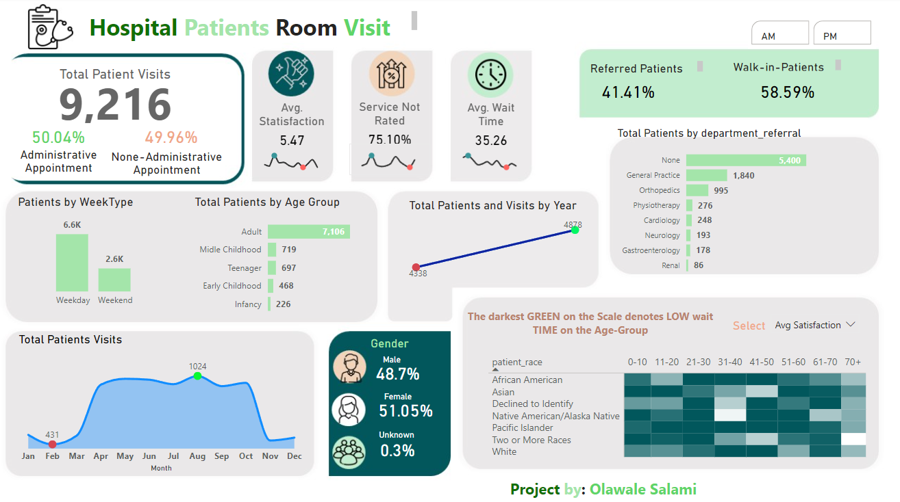
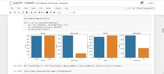
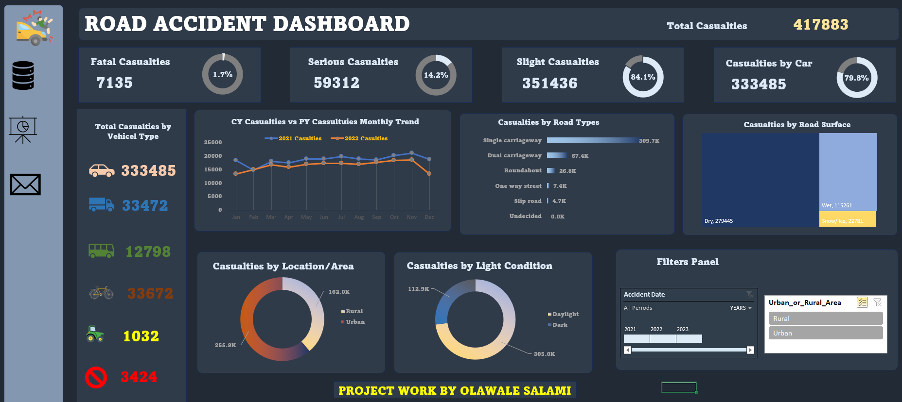

The Hospital Patient Room Visit dashboard provides a comprehensive analysis of patient visits,
highlighting key metrics such as total patient visits, appointment types, patient satisfaction,
ratings, wait times, and demographic breakdowns. This dashboard, designed by Olawale Salami, serves
as a critical tool for understanding patient flow and optimizing hospital operations.


AllLife Bank is a US bank that has a growing customer base. The majority of these customers are liability customers (depositors) with varying sizes of deposits. The number of customers who are also borrowers (asset customers) is quite small, and the bank is interested in expanding this base rapidly to bring in more loan business and in the process, earn more through the interest on loans. In particular, the management wants to explore ways of converting its liability customers to personal loan customers (while retaining them as depositors).
A campaign that the bank ran last year for liability customers showed a healthy conversion rate of over 9% success. This has encouraged the retail marketing department to devise campaigns with better target marketing to increase the success ratio.
You as a Data scientist at AllLife bank have to build a model that will help the marketing department to identify the potential customers who have a higher probability of purchasing the loan.

The provided dataset contains information about customers from a bank, including their financial attributes such as credit limit and the number of credit cards they possess. It also includes data about the different channels through which customers have reached out to the bank for queries, including in-person visits, online interactions, and contact through the call center. This dataset will be utilized to analyze customer behavior, identify patterns, and make data-driven decisions to enhance marketing strategies and improve customer service at the bank.
There is a huge demand for used cars in the Indian Market today. As sales of new cars have slowed down in the recent past, the pre-owned car market has continued to grow over the past years and is larger than the new car market now. Cars4U is a budding tech start-up that aims to find footholes in this market.
In 2018-19, while new car sales were recorded at 3.6 million units, around 4 million second-hand cars were bought and sold. There is a slowdown in new car sales and that could mean that the demand is shifting towards the pre-owned market. In fact, some car sellers replace their old cars with pre-owned cars instead of buying new ones. Unlike new cars, where price and supply are fairly deterministic and managed by OEMs (Original Equipment Manufacturer / except for dealership level discounts which come into play only in the last stage of the customer journey), used cars are very different beasts with huge uncertainty in both pricing and supply. Keeping this in mind, the pricing scheme of these used cars becomes important in order to grow in the market.
As a senior data scientist at Cars4U, you have to come up with a pricing model that can effectively predict the price of used cars and can help the business in devising profitable strategies using differential pricing. For example, if the business knows the market price, it will never sell anything below it.
Data cleaning is a crucial step in the data analysis process that involves detecting and correcting errors, handling missing values, and ensuring data consistency. Python, with its powerful libraries like Pandas and NumPy, streamlines this process. Pandas allows for efficient handling of missing data through methods such as forward fill, backward fill, or removing incomplete rows/columns. It also provides tools for removing duplicates and converting data types to ensure consistency. Handling outliers using statistical methods like z-score or IQR ensures the dataset represents typical behavior, while string manipulation functions clean and standardize textual data, making it ready for analysis.
Data visualization transforms cleaned data into graphical representations, making it easier to understand patterns and insights. Python’s Matplotlib library offers extensive customization for creating static and animated plots, while Seaborn, built on Matplotlib, simplifies the creation of complex statistical graphics like violin plots and heatmaps. For interactive visualizations, Plotly provides dynamic charts and dashboards that can be embedded in web applications, enhancing data exploration and storytelling. These visual tools are essential for communicating findings effectively, enabling data-driven decision-making and providing actionable insights.

Accidents occur for various reasons, and understanding these factors can help recognize accident patterns and predict their occurrence. Data from road traffic accident reports sheds light on the situations leading to accidents and their human impact. This information is invaluable for identifying methods to reduce risks and encourage safe behavior. This project’s objective is to improve road safety through data utilization. This is achieved by developing models that can predict the likelihood of accidents and the severity of resulting injuries, thereby facilitating a more knowledgeable strategy and response for preventing accidents.
-->